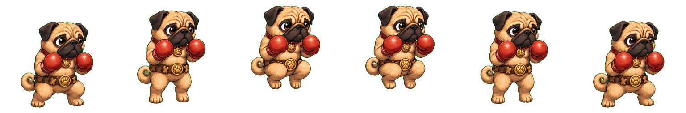

PASS: source-only replacement jump row accepted for T035.
Exact 1536x256 alpha spritesheet. Pickles stays near idle scale; motion is pose-local and does not shrink him into a smaller character.

Idle height: 228px. Previous jump height: 144-158px. Replacement jump height: 190-212px with tucked-knee poses and stable head/glove scale.
No public/assets/generated/fighters/pugilist-pug folder is introduced; Pickles remains non-playable.